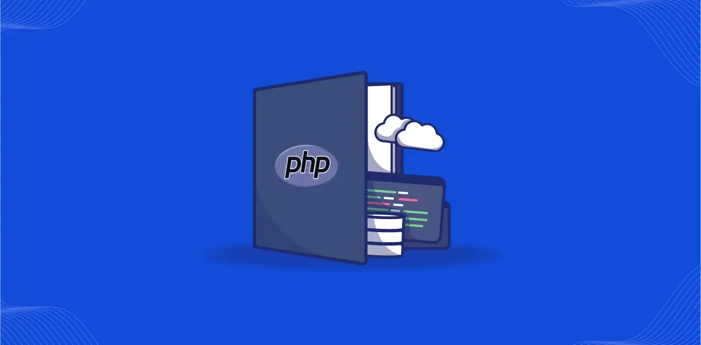
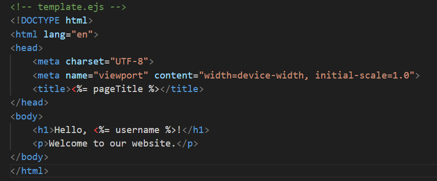
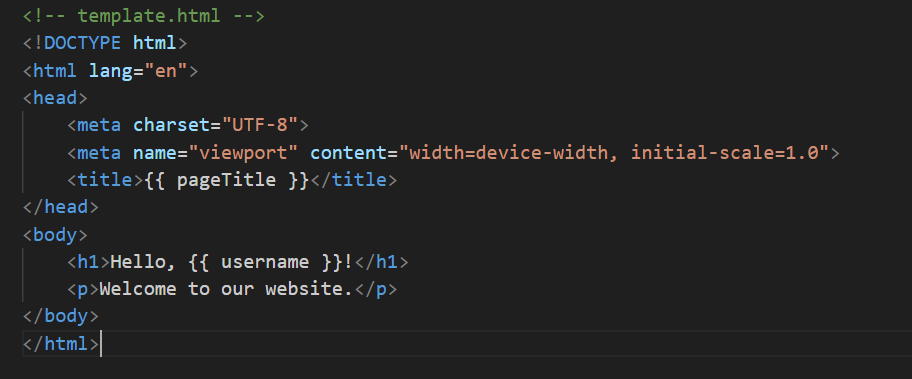
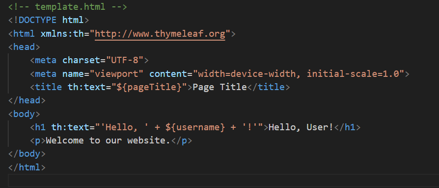
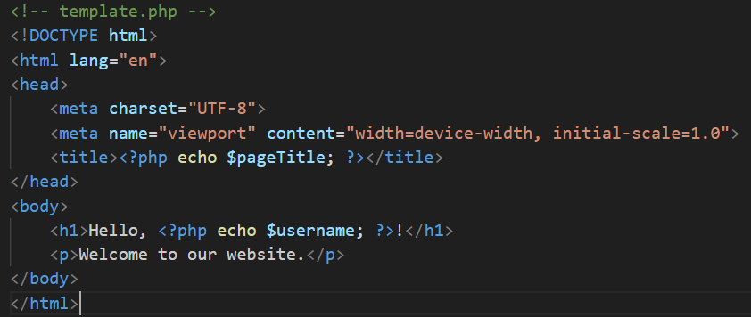

Back-End Web Development has evolved a lot over these years. Indeed, we have Node.js, Django, ASP.NET, and even Go taking over. Hence, it seems everyone is fascinated for the definitive death of PHP. I must admit that even I was reluctant to learn the basics of PHP because of this. However, here and now I will tell you not only what drove me to learn PHP, but also why PHP will not die as many wish, but rather stay fresh for the new ages to come.
PHP Was Built for the Back-End
PHP was built to be a back-end web development language at its core, unlike other alternatives such as Python and Java, that are general-purpose programming languages.
Why does this matter?
Let me convince you by giving you a list of the native functionalities PHP has:
Grabbing GET and POST parameters
Decoding and Decoding JSON strings
XML and DOM parsers
File Handling
FTP Interaction
Database Drivers
Cookies and Sessions Handlers
Email reading and sending Handlers
Password Hashing
Caching
All of these features are essential for building a robust back-end for web interfaces.
So instead of having to look for packages or libraries that handle these features for other platforms, why not start out with PHP from scratch instead?
PHP Is Way Too Simple
When API's are JSON are not used to deliver data from the back-end to the front-end, a technique called templating is used.
Templating is the process of outputting dynamic data from the back-end right into the HTML code of our web app.
Other back-end solutions such as Node.js, Flask, and Spring have their own separate templating engines.
These templating engines could vary on their complexity and their syntax differences could make it feel as if we were learning another programming language.
However, with PHP, we can just create a PHP file where we can enter and exit PHP mode whenever we want. Indeed, we can embed HTML code right into a PHP file, then we enter and exit PHP mode to display the dynamic data from the server. Hence, there is no need to learn complex syntax.
Here you have some code examples of an HTML template meant to display the page title and the username. Check out the differences by yourself and see which one is easier to deal with.
EJS
Jinja
Thymeleaf
PHP
There are many other reasons why PHP should be used. It has native API's that facilitate database connectivity, it is an OOP language that allows the use of the MVC model, and there are many frameworks such as Laravel, CodeIgniter, and Symfony that are widely used in the industry.
In conclusion, please give PHP another go and you may find a lifelong friendly solution for your back-end development needs.
I wish you the best for your programming endeavors.